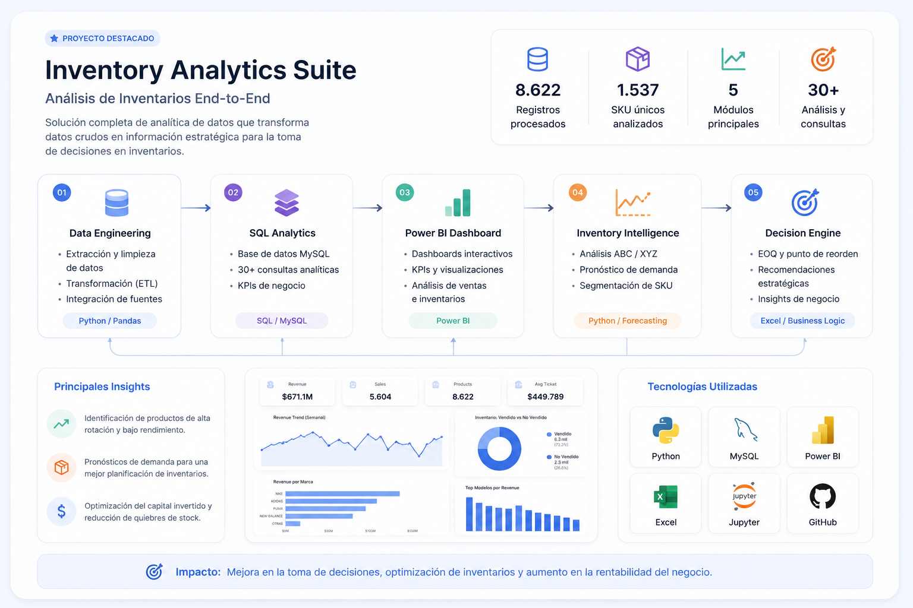
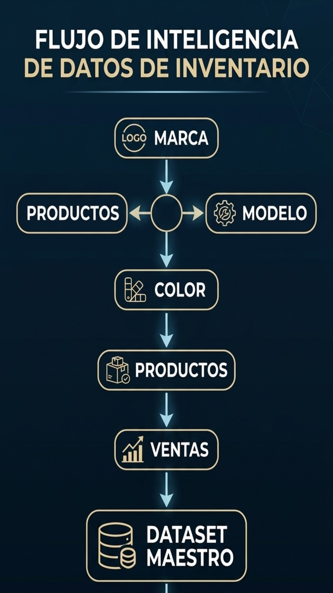
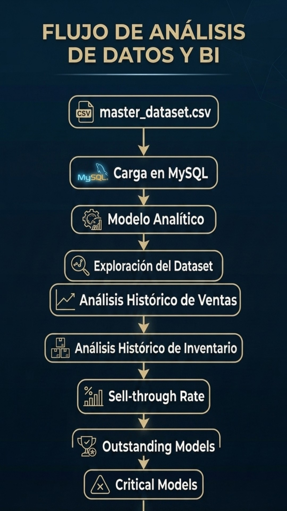
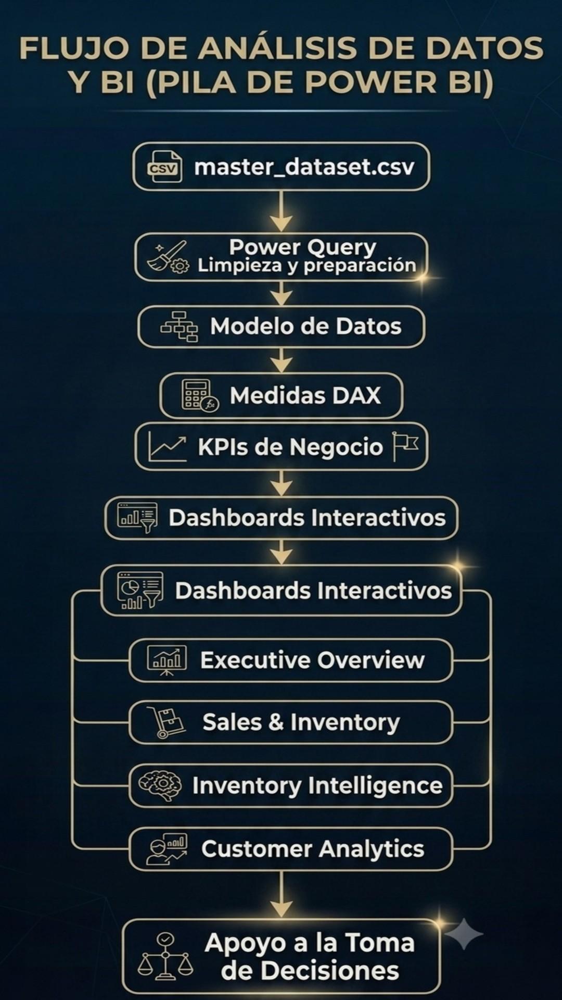
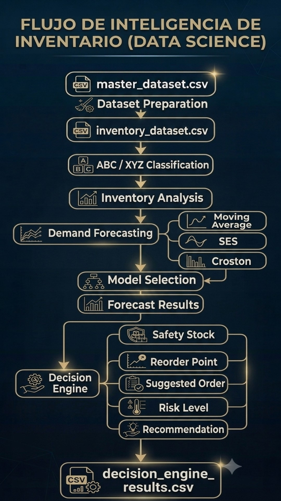
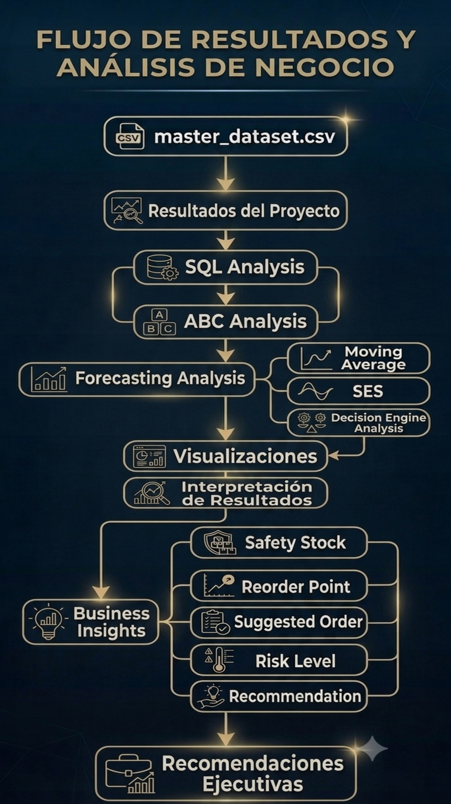
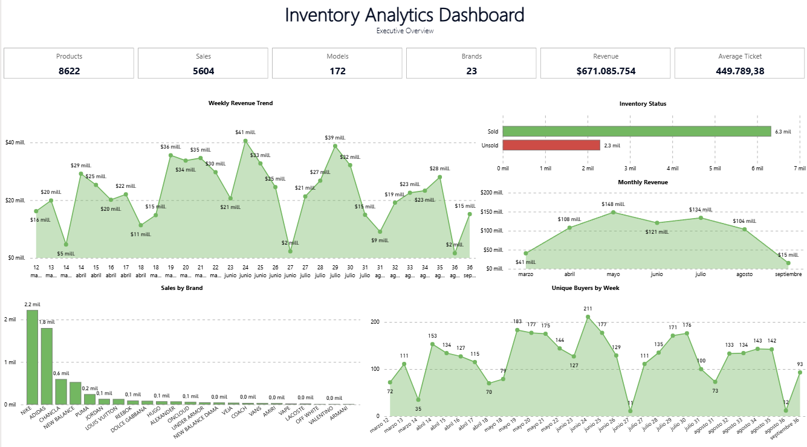
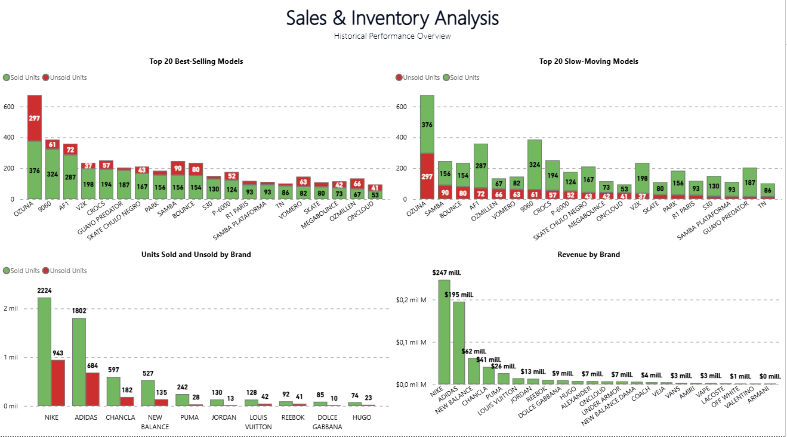
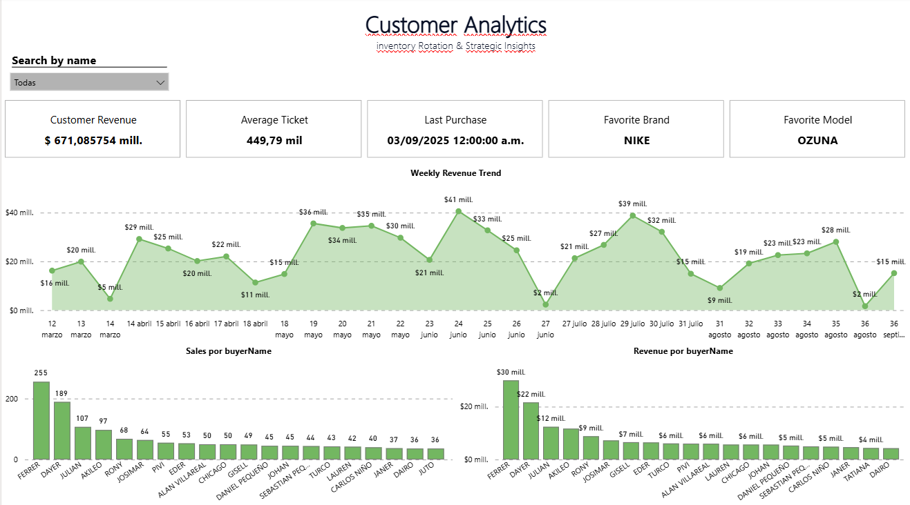
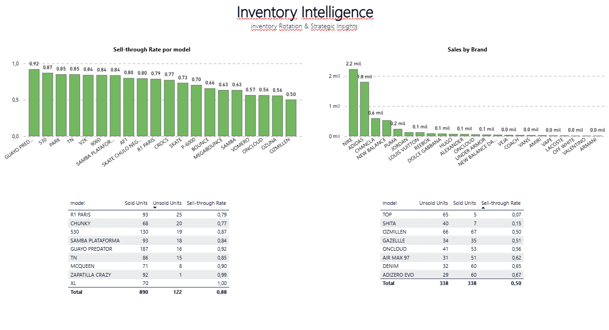

Isaac Palomino
Estudiante de Ingeniería Industrial
En formación como Data Analyst
Desarrollo proyectos de análisis de datos enfocados en resolver problemas de negocio mediante Python, SQL y Power BI.
Inventory Analytics Suite
Proyecto de análisis de inventarios desarrollado con Python, SQL, Power BI y Excel.

Ingeniería Industrial aplicada al análisis de datos

Quién soy
Soy estudiante de Ingeniería Industrial con un fuerte interés por Data Analytics y Business Intelligence. Me motiva comprender cómo los datos pueden explicar el comportamiento de un negocio y transformarse en información útil para optimizar procesos, mejorar la eficiencia y apoyar la toma de decisiones.
Mi transición hacia Data Analytics
Mi formación en Ingeniería Industrial despertó mi interés por el análisis cuantitativo, la optimización y la mejora continua. Esto me llevó a especializarme en Python, SQL, Power BI y análisis de datos, desarrollando proyectos donde combino habilidades técnicas con una visión orientada al negocio.
Objetivo profesional
Actualmente busco mi primera oportunidad como Data Analyst o Business Intelligence Analyst, donde pueda seguir aprendiendo, enfrentar desafíos reales y aportar soluciones basadas en datos mientras continúo fortaleciendo mis habilidades técnicas y analíticas.
Cómo abordo un proyecto de análisis de datos
Independientemente de la herramienta utilizada, sigo un proceso estructurado que busca comprender el negocio, transformar los datos en información útil y generar recomendaciones que apoyen la toma de decisiones.
Comprender el negocio
Antes de analizar datos, identifico el problema, los objetivos del negocio y las decisiones que el análisis debe respaldar. Esto permite orientar el proyecto hacia resultados con impacto real.
Preparar los datos
Realizo procesos de limpieza, transformación e integración mediante ETL, evaluando la calidad de los datos para construir una base confiable sobre la cual desarrollar el análisis.
Analizar y visualizar
Combino Python, SQL y Power BI para explorar la información, construir indicadores, visualizar tendencias y, cuando el problema lo requiere, desarrollar modelos de pronóstico y análisis avanzados.
Generar decisiones
El resultado final no es un dashboard, sino recomendaciones accionables que permitan optimizar procesos, mejorar la gestión y facilitar la toma de decisiones basada en datos.
Inventory Analytics Suite
Proyecto End-to-End de Analítica de Datos desarrollado para una empresa distribuidora de calzado. El objetivo fue transformar datos operativos en información útil para la toma de decisiones mediante un pipeline completo que integra Ingeniería de Datos, SQL Analytics, Business Intelligence, Forecasting y un Decision Engine para la gestión de inventarios.
Arquitectura del Proyecto
El proyecto fue desarrollado siguiendo un pipeline completo de analítica de datos que integra procesos ETL, análisis en SQL, visualización en Power BI, modelos de forecasting y un Decision Engine para apoyar la gestión del inventario.
ETL Process

SQL Analytics

Power BI Dashboard

Inventory Intelligence

Business Insights

Power BI Dashboards
Desarrollo de cuatro dashboards interactivos orientados al seguimiento de ventas, inventario, clientes e indicadores de negocio para facilitar el análisis y la toma de decisiones.
Executive Overview

Sales & Inventory Analysis

Customer Analytics

Inventory Intelligence

Business Insights
Además de los dashboards, el proyecto incorpora análisis avanzados desarrollados en Python para clasificación ABC/XYZ, pronóstico de demanda, evaluación del desempeño de los modelos y un motor de decisiones para la planificación del inventario.
Distribución del Portafolio por Clase ABC

Demanda Histórica por Clase ABC

Selected Forecasting Models

Decision Engine Recommendations

SKU Requiring Replenishment

Distribution of Forecast Uncertainty

Forecast Confidence Interval Width

RMSE Distribution by Forecasting Model

Risk Level vs Recommendation

Principales resultados
- ✓ Pipeline ETL para integrar y preparar los datos.
- ✓ Base analítica en SQL para consultas y métricas de negocio.
- ✓ Cuatro dashboards interactivos desarrollados en Power BI.
- ✓ Clasificación ABC/XYZ de más de 1.500 SKU.
- ✓ Modelos de forecasting para estimación de demanda.
- ✓ Decision Engine para apoyar decisiones de reposición de inventario.
Construyamos soluciones con datos
Actualmente busco mi primera oportunidad como Data Analyst o Business Intelligence Analyst. Si deseas conocer más sobre mi trabajo, mi proyecto o conversar sobre una oportunidad profesional, estaré encantado de conectar contigo.